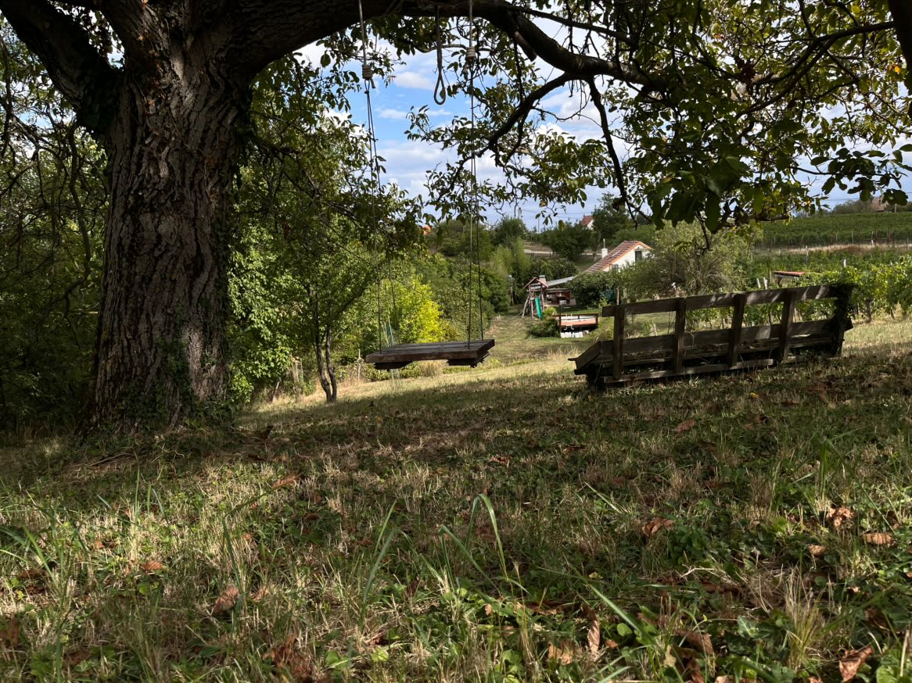
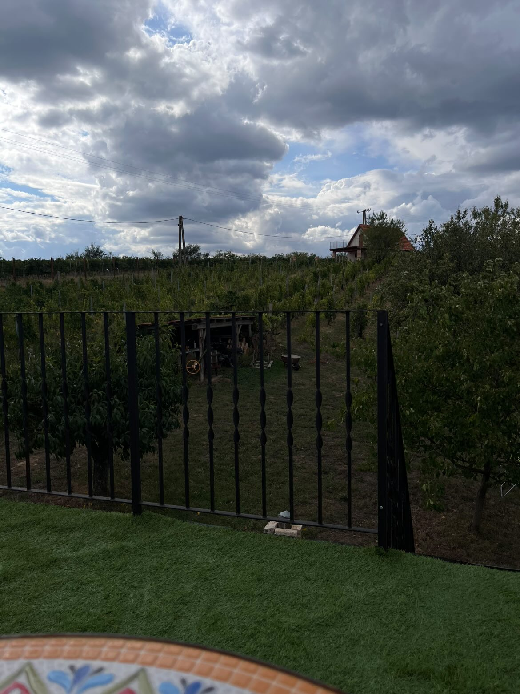
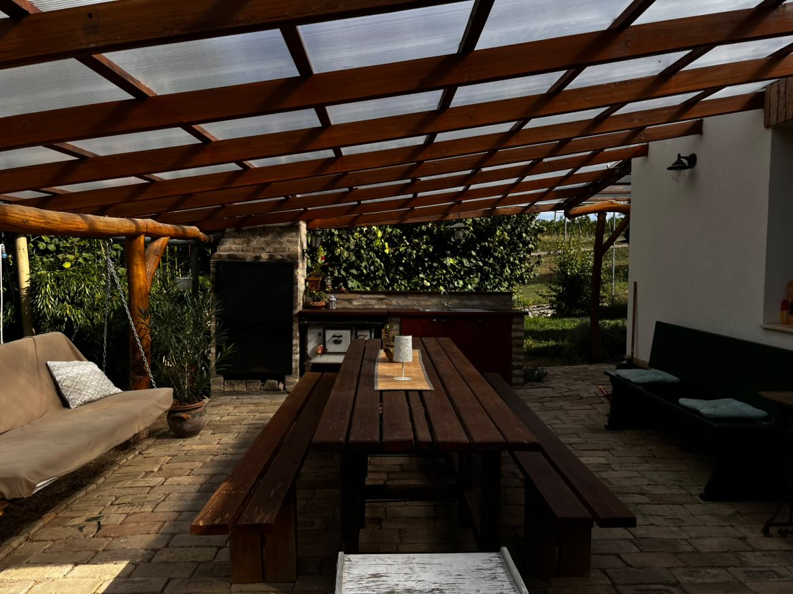
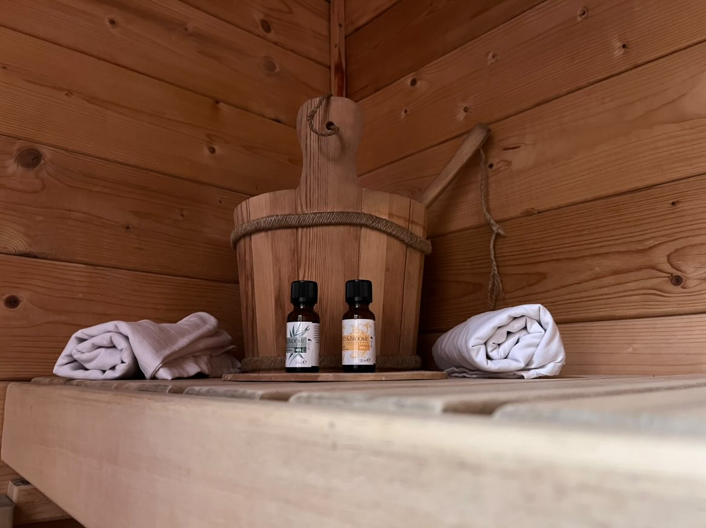

Kapcsolódás a természethez
A Cseligevi Vendégházat azért álmodtuk meg, hogy legyen egy hely, ahol az ember végre megállhat. Ahol a hétköznapok rohanása, a zaj és a képernyők világa helyett újra a természet ritmusa veszi körül.
Idő jut magadra, a szeretteidre, és arra, hogy újraélj minden apró, mégis fontos pillanatot.


Szekszárdi borvidék
Vendégházunk a Szekszárdi borvidék egyik legszebb, tanyavilágban megbúvó gerincén található, ahonnan lélegzetelállító panoráma tárul eléd.
A Bati‑kereszt kilátó mindössze 3 km, közel a Heimann borászat és Sötétvölgy is.
Élmények egész nap
Reggel friss levegő és madárdal; napközben a tágas zöld telek teret ad játékhoz, pihenéshez és romantikus sétákhoz; este a naplemente narancs‑arany fényei borítják be a hegygerincet.


Pároknak és családoknak
A házat úgy alakítottuk ki, hogy ideális legyen pároknak és családoknak. A benti szauna a hűvösebb napokon is feltölt, a gyerekek pedig szabadon szaladgálhatnak, csúszdázhatnak és játszhatnak a zöld udvaron.